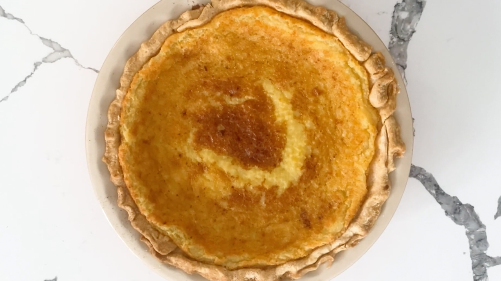

Eggnog Pie
Return to Main Page

Follow this recipe to make this pie
If you have ever had a traditional Buttermilk Pie then you will love this pie with its holiday twist! You can also add a splash of brandy or brandy extract for a little kick.
Igredients:
- 1 ¼ cups white sugar
- ¼ cup all-purpose flour
- 2 cups eggnog
- 3 eggs, beaten
- 1 teaspoon vanilla extract
- ¼ cup unsalted butter, melted and cooled slightly
- 1 (9 inch) prepared, unbaked pie crust, thawed
Steps:
- Preheat oven to 350 degrees F (175 degrees C).
- Mix the sugar and flour together in a mixing bowl. Beat in the eggnog, eggs, and vanilla to make a smooth mixture. Stir in the butter. Pour into the prepared pie crust.
- Bake in preheated oven until the custard is set, 35 to 40 minutes. Cool before serving.